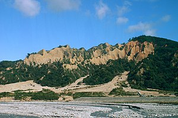

簡介
火炎山的地質脆弱，其組成是以錦水頁岩、火炎山相、香山相，其中火炎山相與香山相歸屬頭嵙山層，屬於更新世產物，主要地質構造為厚層礫石間夾著薄層砂岩所構成，並且表層已有紅土化現象，與大肚、八卦兩座臺地對比來看，依土壤紅化程度分析得知，火炎山紅土化程度較高，表示生成年代早於此兩座臺地。其南側濱臨大安溪，由於風化與雨水的侵蝕作用，切割成許多尖銳山峰的組合。谷地內則堆滿沖刷下來的礫石，有如礫石河流，往往沖蝕到山麓下縣道140線，因此公路總局築起隧道來防範土石流沖蝕。由於具有崩塌斷崖地理景觀、原生馬尾松林林相 ，1986年6月27日依照文化資產保存法在此設立「苗栗三義火炎山自然保留區」。 火炎山東側為中山高速公路，由臺中、豐原往北的車輛經過后里台地後，即可遠遠望見氣勢雄偉且略帶凶惡的火炎山矗立在左前方，為中山高速公路沿途最佳景觀之一。
設施
火炎山上面也有許多電台、電視的轉播站，主要集中在火炎山北側。電台部分，ICRT、中廣、漢聲、警廣、苗栗正義電台（最愛生活頻道）均有在此設立轉播站。電視部分則有臺視、中視、華視、民視、公視五家電視台的轉播站。火炎山西麓有黃正雄於1984年創建的臺灣少林寺遊樂區。參考文獻、註解
- 註：何春蓀所著《臺灣地質概論：臺灣地質圖說明書》一書，火炎山相、香山相分別亦稱火炎山礫岩、香山砂岩或香山砂頁岩。
- 鄭遠昌. 地形變遷之研究：以苗栗火炎山地區為例. 《臺灣大學地理環境資源研究所碩士論文》. 2004 （中文）.註：內文提及中苗六線，即今縣道140線。
- 《苗栗三義火炎山自然保留區》，農委會林務局. [2019-04-28]. （原始內容存檔於2019-04-28）.